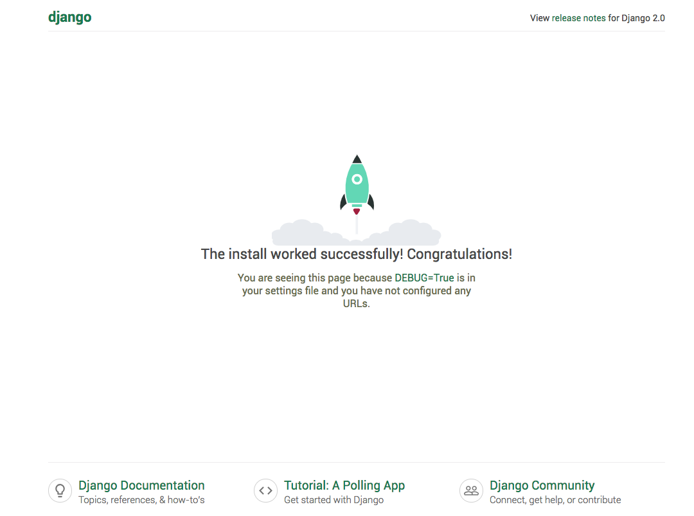

Docker Compose で Django/PostgreSQL 環境をつくる
Dockerfile を準備する。
# ベースイメージ FROM python:3 # Docker コンテナ内で使える環境変数を指定 ENV PYTHONUNBUFFERED 1 # イメージビルド時に mkdir /code する RUN mkdir /code # この後の指令は /code で実行する WORKDIR /code # requirements.txt をイメージ内の /code/ ディレクトリにコピーする ADD requirements.txt /code/ # イメージビルド時に requirements.txt から pip install する RUN pip install -r requirements.txt # カレントディレクトリ配下を /code 配下にコピーする ADD . /code/
requirements.txt を準備する。
Django>=1.8,<2.0 psycopg2 # psycopg2: Python-PostgreSQL Database Adapter https://pypi.org/project/psycopg2/
docker-compose.yml を準備する。
version: '3' services: db: image: postgres web: # Dockerfile が存在するディレクトリの相対パスを指定する build: . # コンテナ実行時に実行するコマンド command: python3 manage.py runserver 0.0.0.0:8000 # コンテナの /code を、ホストのカレントディレクトリにマウントする volumes: - .:/code # ポートフォワーディング ports: # ホストのポート:コンテナのポート - "3236:8000" # 依存するものをここに書く。docker-compose up 時に、 web の前に db をスタートしてくれる。 depends_on: - db
Docker イメージをビルドする
# docker-compose.yml に指定したとおり、カレントディレクトリの Dockerfile から `web` のイメージをビルド # `web` の中で django-admin.py startproject fff を実行する $ sudo docker-compose run web django-admin.py startproject fff . # mac のパスワードを入力する Password: Creating network "fff_default" with the default driver Pulling db (postgres:)... latest: Pulling from library/postgres a5a6f2f73cd8: Already exists e50fbea8af5a: Pulling fs layer 73b4855ad326: Pulling fs layer 39616673f22b: Pulling fs layer 94e1b79f69ee: Pull complete c91e4af2ff8e: Pull complete 16ba314c612f: Pull complete 89011a174cee: Pull complete d82b02de73e7: Pull complete e3026dc5acbe: Pull complete 225d0988f8bb: Pull complete 89efa60266d6: Pull complete 64e6167259ce: Pull complete 8f44f8f48bbe: Pull complete Digest: sha256:40b48cf04185e69c5a9183a986fcbbfd105e5991a70b1980e9a641b53ba5ead7 Status: Downloaded newer image for postgres:latest Creating fff_db_1 ... done Building web Step 1/7 : FROM python:3 3: Pulling from library/python 54f7e8ac135a: Pull complete d6341e30912f: Pull complete 087a57faf949: Pull complete 5d71636fb824: Pull complete 0c1db9598990: Pull complete bfb904e99f24: Pull complete 78a3d3a96a32: Pull complete 885a0ed92c89: Pull complete dd7cc9ace242: Pull complete Digest: sha256:3870d35b962a943df72d948580fc66ceaaee1c4fbd205930f32e0f0760eb1077 Status: Downloaded newer image for python:3 ---> 1e80caffd59e Step 2/7 : ENV PYTHONUNBUFFERED 1 ---> Running in 8b36b0f52978 Removing intermediate container 8b36b0f52978 ---> d8c31fcb6021 Step 3/7 : RUN mkdir /code ---> Running in 4f2b5e392870 Removing intermediate container 4f2b5e392870 ---> 9c8ee756f336 Step 4/7 : WORKDIR /code ---> Running in de4383433c19 Removing intermediate container de4383433c19 ---> 3641af229774 Step 5/7 : ADD requirements.txt /code/ ---> ef8667808ce1 Step 6/7 : RUN pip install -r requirements.txt ---> Running in 1da62dd84073 Collecting Django<2.1,>=1.8 (from -r requirements.txt (line 1)) Downloading https://files.pythonhosted.org/packages/6c/9d/c0feec696b815708354a2fd06ae0f51330a15043822a29bc8be2f185d9fe/Django-2.0.9-py3-none-any.whl (7.1MB) Collecting psycopg2 (from -r requirements.txt (line 2)) Downloading https://files.pythonhosted.org/packages/90/aa/b033c170c9bd505c7e4d1560f5dbb35ca2a7e928ac03c384f93d0cdaf6a7/psycopg2-2.7.6.1-cp37-cp37m-manylinux1_x86_64.whl (2.7MB) Collecting pytz (from Django<2.1,>=1.8->-r requirements.txt (line 1)) Downloading https://files.pythonhosted.org/packages/f8/0e/2365ddc010afb3d79147f1dd544e5ee24bf4ece58ab99b16fbb465ce6dc0/pytz-2018.7-py2.py3-none-any.whl (506kB) Installing collected packages: pytz, Django, psycopg2 Successfully installed Django-2.0.9 psycopg2-2.7.6.1 pytz-2018.7 Removing intermediate container 1da62dd84073 ---> d0afed5e3cf7 Step 7/7 : ADD . /code/ ---> 5a39d311c84c Successfully built 5a39d311c84c Successfully tagged fff_web:latest WARNING: Image for service web was built because it did not already exist. To rebuild this image you must use `docker-compose build` or `docker-compose up --build`.
settings.py に DATABASE を定義する。
DATABASES = { 'default': { 'ENGINE': 'django.db.backends.postgresql', 'NAME': 'postgres', 'USER': 'postgres', 'HOST': 'db', 'PORT': 5432, } }
Docker コンテナ (db と web) を実行する
$ docker-compose up fff_db_1 is up-to-date Creating fff_web_1 ... done Attaching to fff_db_1, fff_web_1 db_1 | The files belonging to this database system will be owned by user "postgres". db_1 | This user must also own the server process. db_1 | db_1 | The database cluster will be initialized with locale "en_US.utf8". db_1 | The default database encoding has accordingly been set to "UTF8". db_1 | The default text search configuration will be set to "english". db_1 | db_1 | Data page checksums are disabled. db_1 | db_1 | fixing permissions on existing directory /var/lib/postgresql/data ... ok db_1 | creating subdirectories ... ok db_1 | selecting default max_connections ... 100 db_1 | selecting default shared_buffers ... 128MB db_1 | selecting dynamic shared memory implementation ... posix db_1 | creating configuration files ... ok db_1 | running bootstrap script ... ok db_1 | performing post-bootstrap initialization ... ok db_1 | syncing data to disk ... ok db_1 | db_1 | Success. You can now start the database server using: db_1 | db_1 | db_1 | WARNING: enabling "trust" authentication for local connections db_1 | You can change this by editing pg_hba.conf or using the option -A, or db_1 | --auth-local and --auth-host, the next time you run initdb. db_1 | pg_ctl -D /var/lib/postgresql/data -l logfile start db_1 | db_1 | **************************************************** db_1 | WARNING: No password has been set for the database. db_1 | This will allow anyone with access to the db_1 | Postgres port to access your database. In db_1 | Docker's default configuration, this is db_1 | effectively any other container on the same db_1 | system. db_1 | db_1 | Use "-e POSTGRES_PASSWORD=password" to set db_1 | it in "docker run". db_1 | **************************************************** db_1 | waiting for server to start....2018-11-26 14:35:32.757 UTC [45] LOG: listening on Unix socket "/var/run/postgresql/.s.PGSQL.5432" db_1 | 2018-11-26 14:35:32.772 UTC [46] LOG: database system was shut down at 2018-11-26 14:35:32 UTC db_1 | 2018-11-26 14:35:32.777 UTC [45] LOG: database system is ready to accept connections db_1 | done db_1 | server started db_1 | db_1 | /usr/local/bin/docker-entrypoint.sh: ignoring /docker-entrypoint-initdb.d/* db_1 | db_1 | waiting for server to shut down....2018-11-26 14:35:32.851 UTC [45] LOG: received fast shutdown request db_1 | 2018-11-26 14:35:32.855 UTC [45] LOG: aborting any active transactions db_1 | 2018-11-26 14:35:32.858 UTC [45] LOG: background worker "logical replication launcher" (PID 52) exited with exit code 1 db_1 | 2018-11-26 14:35:32.860 UTC [47] LOG: shutting down db_1 | 2018-11-26 14:35:32.882 UTC [45] LOG: database system is shut down db_1 | done db_1 | server stopped db_1 | db_1 | PostgreSQL init process complete; ready for start up. db_1 | db_1 | 2018-11-26 14:35:32.970 UTC [1] LOG: listening on IPv4 address "0.0.0.0", port 5432 db_1 | 2018-11-26 14:35:32.972 UTC [1] LOG: listening on IPv6 address "::", port 5432 db_1 | 2018-11-26 14:35:32.977 UTC [1] LOG: listening on Unix socket "/var/run/postgresql/.s.PGSQL.5432" db_1 | 2018-11-26 14:35:32.994 UTC [54] LOG: database system was shut down at 2018-11-26 14:35:32 UTC db_1 | 2018-11-26 14:35:33.002 UTC [1] LOG: database system is ready to accept connections web_1 | /usr/local/lib/python3.7/site-packages/psycopg2/__init__.py:144: UserWarning: The psycopg2 wheel package will be renamed from release 2.8; in order to keep installing from binary please use "pip install psycopg2-binary" instead. For details see: <http://initd.org/psycopg/docs/install.html#binary-install-from-pypi>. web_1 | """) web_1 | /usr/local/lib/python3.7/site-packages/psycopg2/__init__.py:144: UserWarning: The psycopg2 wheel package will be renamed from release 2.8; in order to keep installing from binary please use "pip install psycopg2-binary" instead. For details see: <http://initd.org/psycopg/docs/install.html#binary-install-from-pypi>. web_1 | """) web_1 | Performing system checks... web_1 | web_1 | System check identified no issues (0 silenced). web_1 | web_1 | You have 14 unapplied migration(s). Your project may not work properly until you apply the migrations for app(s): admin, auth, contenttypes, sessions. web_1 | Run 'python manage.py migrate' to apply them. web_1 | November 26, 2018 - 14:44:40 web_1 | Django version 2.0.9, using settings 'fff.settings' web_1 | Starting development server at http://0.0.0.0:8000/ web_1 | Quit the server with CONTROL-C.
アクセスする。

実行中の コンテナを list する。
$ docker ps CONTAINER ID IMAGE COMMAND CREATED STATUS PORTS NAMES e95174b2be87 fff_web "python3 manage.py r…" 32 minutes ago Up 32 minutes 0.0.0.0:3236->8000/tcp fff_web_1 2994f0092cd4 postgres "docker-entrypoint.s…" 41 minutes ago Up 41 minutes 5432/tcp fff_db_1
安全に shutdown する。
$ docker-compose down